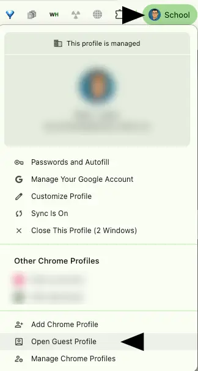

Modul 1
Kap 1.1 - Vad är webbutveckling?
Webbutveckling handlar om att skapa innehåll, struktur, utseende och funktioner som människor kan använda i en webbläsare.
Mål
- Förklara skillnaden mellan klient och server.
- Känna igen begrepp som URL, DNS, IP-adress, HTTP och HTTPS.
- Förstå varför standarder gör webben möjlig att använda på många enheter.
Startfrågor
- Vad händer när du skriver en webbadress i webbläsaren?
- Varför tror du att samma webbsida kan visas på mobil, dator och surfplatta?
Webben i korthet
Webben skapades för att dokument skulle kunna länkas ihop och hämtas över internet. Tim Berners-Lee presenterade iden 1989 på CERN, och 1991 blev webben tillgänglig för fler användare. När W3C bildades 1994 började arbetet med gemensamma standarder för bland annat HTML och CSS.
Standarder är viktiga eftersom webben inte ägs av en enda webbläsare eller ett enda företag. En sida ska kunna fungera i olika webbläsare, operativsystem och skärmstorlekar.
Klient, server och URL
Din webbläsare är en klient. Den begär filer från en server. Servern svarar med HTML, CSS, bilder, JavaScript eller ett felmeddelande. Adressen du skriver kallas URL. Den pekar ut vilken server och vilken resurs du vill hämta.
En domän som example.com behöver översättas till en IP-adress. Det görs med DNS, som
fungerar ungefär som internets adressbok.
HTTP, HTTPS och statuskoder
Webbläsaren och servern kommunicerar med protokollet HTTP. Den säkra varianten heter HTTPS. I HTTPS krypteras kommunikationen med TLS. Uttrycket SSL-certifikat används fortfarande ofta, även om modern kryptering egentligen bygger på TLS.
När servern svarar skickas en statuskod. 200 betyder normalt att begäran lyckades.
404 betyder att resursen inte hittades. Statuskoderna delas in i grupper: 100-tal för
information, 200-tal för lyckade svar, 300-tal för omdirigeringar, 400-tal för klientfel och
500-tal för serverfel.
HTTP-metoder
När en klient pratar med en server kan den använda olika metoder. De vanligaste i den här kursen är
GET och POST. GET hämtar data. POST skickar data, till exempel från ett
formulär. Det finns även metoder som PUT för uppdatering och DELETE för borttagning.
Bit och byte
All digital information lagras som ettor och nollor. En bit är en etta eller nolla. Åtta bitar blir en byte. Filer på webben mäts ofta i kB, MB och GB. När du senare optimerar bilder och video kommer filstorlek att påverka hur snabbt sidan laddas.
Prova själv
- Öppna en valfri webbsida.
- Högerklicka och välj Inspect eller Inspektera.
- Om din skola har stängt av inspektorn i Chrome kan du öppna en gästprofil i Chrome och prova där.
- Öppna fliken Network och ladda om sidan.
- Leta efter statuskoder som
200eller404.

Sammanfattning
- Webbläsaren är klienten och hämtar resurser från servrar.
- DNS översätter domännamn till IP-adresser.
- HTTPS är den krypterade versionen av HTTP.
- Statuskoder berättar hur servern svarade.
- Filstorlek påverkar hur snabbt webbsidor laddas.